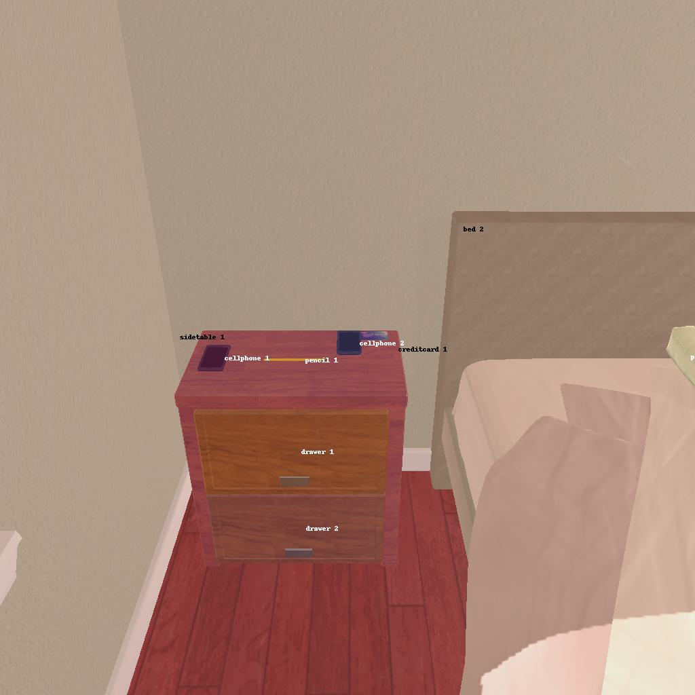

---------------------------------------------------------task: 6---------------------------------------------------------
--------------------------------------------------------------------------------------------------------------------------------------------------------------------
--------------------------------------------------------------------------------------------------------------------------------------------------------------------
Step:--------------------------------------------------------------------------2-------------------------------------------------------------------------------
----------------------------------------
VLM Prompt:
Image1:
Image2:
**Instruction**
1. Analyze the provided image to identify all visible household objects, focusing on those relevant to the task description "put some cd on safe."
2. Use the analysis of the image and the task hint "The agent must find an object of the desired type, pick it up, find the correct location to place it, and put it down there." to answer the question: what is the most reasonable action in the choices for the task description "put some cd on safe"?
4. Decide and write the answer using the template: The answer is: (i): , where i is the real number. If there is no desired object in the image, search every place based on **Initial Observation** to find the object. And if no one is exactly correct, choose a similar answer.
**Initial Observation**
You are in the middle of a room. Looking quickly around you, you can see bed (1-2), dresser (1), sidetable (1-2), drawer (1-11), desk (1), garbagecan (1), safe (1)
**Answer Choices**
(1): go to bed 1
(2): go to dresser 1
(3): go to bed 2
(4): go to sidetable 1
(5): go to sidetable 2
(6): go to drawer 3
(7): go to drawer 4
(8): go to desk 1
(9): go to garbagecan 1
(10): go to drawer 5
(11): go to drawer 6
(12): go to drawer 7
(13): go to drawer 8
(14): go to drawer 9
(15): go to drawer 10
(16): go to drawer 11
(17): go to safe 1
(18): open drawer 2
(19): close drawer 2
(20): examine drawer 2
**Answer**
Let's think step by step by following the instructions.
----------------------------------------
----------------------------------------
Original Response:
The task is to "put some cd on safe," so we need to find a CD first. The image provided shows a sidetable with two drawers, but no CDs are visible on the sidetable or in the open drawer. Since the CD is not visible in the image, we must search every place based on the Initial Observation to find the object.
Based on the Initial Observation, there are several places where a CD could be, such as the dresser, drawers, or desk. The safe is mentioned at the end of the list, which is where we eventually want to place the CD. However, we first need to find the CD before we can put it in the safe.
None of the answer choices directly suggest finding a CD, but some choices are about going to or examining locations where a CD might be found. Since drawers are common storage places for small items like CDs, and drawer 2 is already open in the image, it would be reasonable to examine this drawer further to see if a CD is inside.
The answer is: (20): examine drawer 2.
----------------------------------------
----------------------------------------
>>> Refine Original VLM Response and Get Pure Action: examine drawer 2
----------------------------------------
-----------------------------------------------------------------
Running time: 11.681113243103027 seconds
Total Money: 2.4722400000000007
-----------------------------------------------------------------
-----------------------------------------------------------------
Text Observation:On the drawer 2, you see a pillow 1, a cellphone 1, a cellphone 2, a creditcard 1, and a pencil 1.
-----------------------------------------------------------------
UNSUCCEED